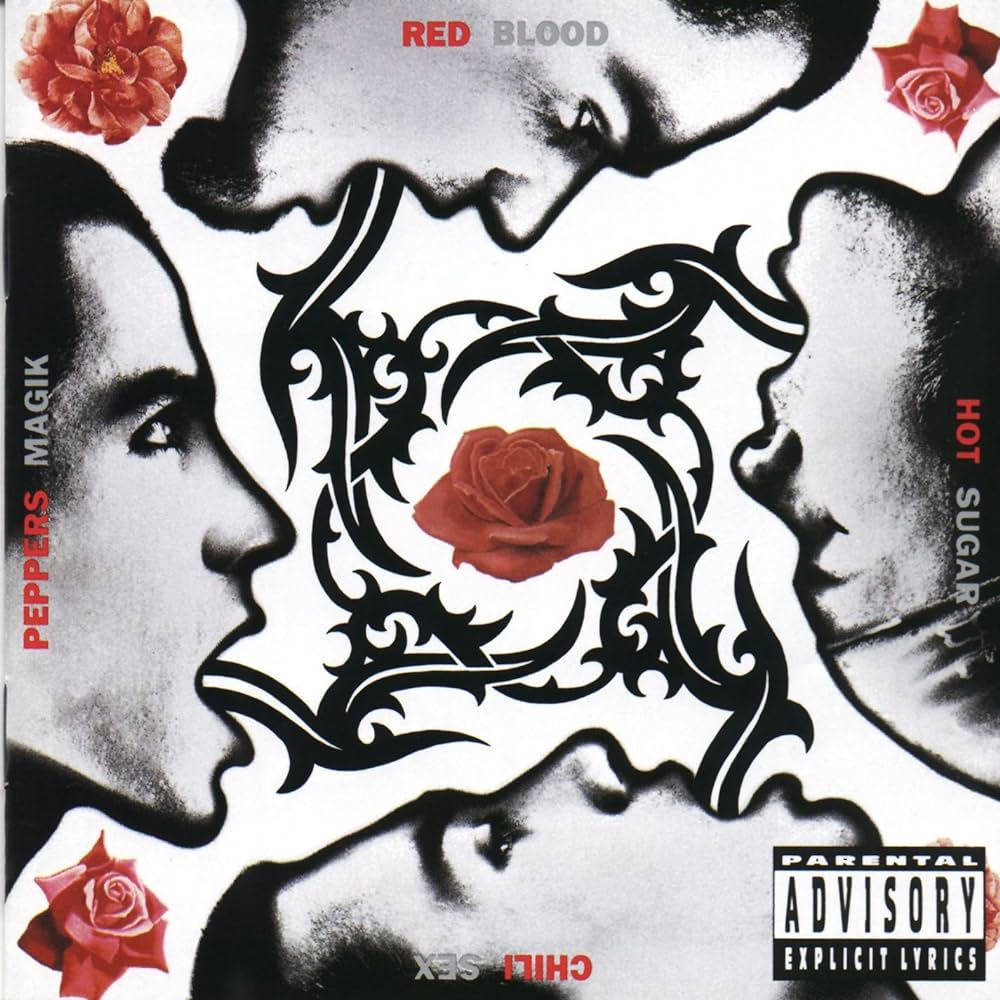

Snow
Come As You Are
Podrá nublarse el sol eternamente podrá secarse en un instante el mar podrá romperse el eje de la tierra como un débil cristal Todo sucederá podrá la muerte cubrirme con su funebre crespon pero jamas en mi podra apagarse la llama de tu amor.
Todos los que amo están en ti y tu en todo lo que amo.